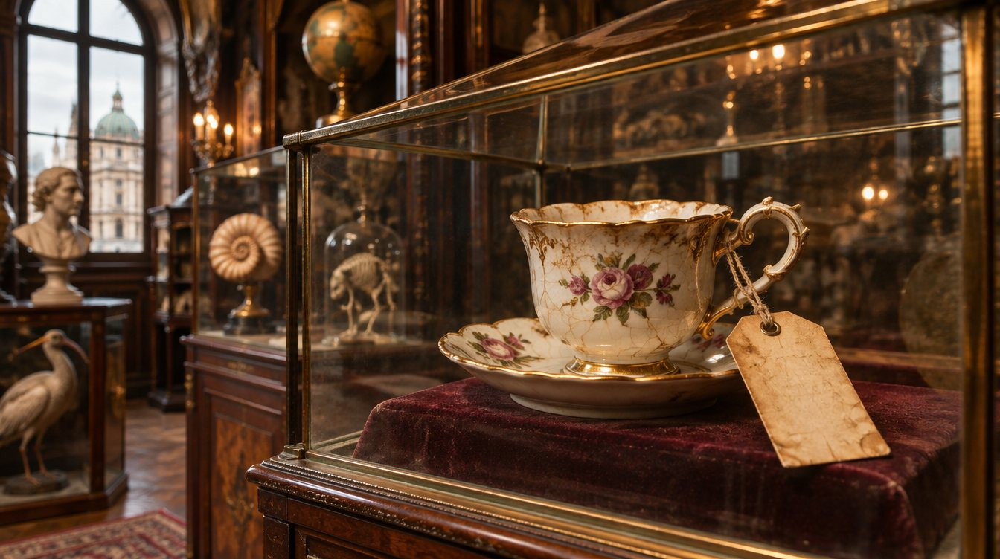

Kuriositätenkabinett: Melange-Tasse aus 1912 mit rätselhaftem Aktenzeichen ausgestellt
Bei Renovierungsarbeiten wurde in einer Zwischendecke eine Porzellantasse aus 1912 gefunden – mit einem Aktenzeichen der Kategorie „sonstig“, die es damals noch gar nicht gab. Der Kustos spricht von einem Irrtum oder einer Prophezeiung.

Das Kuriositätenkabinett des BBSA zeigt ab sofort ein neues Exponat: eine Porzellantasse aus dem Jahr 1912, an deren Henkel ein Aktenvermerk mit Bindfaden befestigt ist. Die Tasse wurde im Frühjahr bei Renovierungsarbeiten im zweiten Stock des Amtsgebäudes in Wien entdeckt, eingeklemmt zwischen zwei Deckenbalken und einer Ausgabe des „Fremden-Blatts“ vom 14. März 1912.
Der Fund
Die Arbeiter der beauftragten Baufirma meldeten den Fund ordnungsgemäß der Abteilung I/3 „Amtsgebäude und Inneres Service“, die ihn wiederum an das Kuriositätenkabinett weiterleitete. Die Tasse ist bis auf einen kleinen Sprung am Rand unbeschädigt. Am Boden befindet sich ein angetrockneter Rest, den ein Gutachten der Abteilung IV/2 als „mit hoher Wahrscheinlichkeit Melange, mittlere Schaumdichte“ identifizierte. Ein Löffel wurde trotz gründlicher Suche nicht gefunden, was der Kustos als „aktenkundigen Schwund“ vermerkte.
Rätselhaft ist der befestigte Aktenvermerk. „Das Aktenzeichen lautet 1912/sonst./47. Die Kategorie ‚sonstig‘ gab es damals aber noch gar nicht – sie wurde erst 1972 eingeführt“, sagt Kustos Hofrat Dr. Ferdinand Schnitzler. „Das ist entweder ein Irrtum oder eine Prophezeiung. Ich tendiere aus wissenschaftlicher Vorsicht zu beidem.“
Die Ermittlungen
Das Amtsarchiv hat sämtliche Protokollbücher des Jahres 1912 durchsucht. Gefunden wurden die Akten 1912/bes./46 (eine besondere Angelegenheit betreffend einen Hofkutscher mit zwei Dienstpferden derselben Farbe) und 1912/bes./48 (eine Beschwerde über zu laute Taubenfütterung am Ballhausplatz). Der Akt Nummer 47 fehlt. Im Protokollbuch findet sich an seiner Stelle nur eine Bleistiftnotiz: „Nach dem Kaffee“.
Die Registerführung des BRbsA hat den Akt daraufhin als „offen seit 1912“ eingetragen. Er ist damit der älteste offene Akt des Amtes und löst einen Akt über einen Hofhund ohne Zuständigkeit aus 1874 ab, der im Vorjahr endgültig erledigt werden konnte. Die Tasse erhielt mit Aufnahmeverfügung des Kustos die Inventarnummer KK-1.204 und wird nach den Grundsätzen des § 19 BBSAG verwahrt.
„Wir werden den Akt weiter ermitteln, aber ohne Eile“, so Schnitzler. „Wer 114 Jahre gewartet hat, wartet auch noch bis nach der Mittagspause.“ Als nächsten Schritt will das Amtsarchiv die Dienstpläne des Jahres 1912 auswerten, um festzustellen, wer am fraglichen Tag Kaffeedienst hatte. Erste Spuren führen zu einem Kanzleioffizial namens Wenzel Hrdlička, über den bisher nur bekannt ist, dass er „sehr ordentlich“ war.
Besichtigung
Die Tasse ist in einer klimatisierten Vitrine im Raum 3 des Kuriositätenkabinetts ausgestellt, zwischen dem Bescheid auf Semmelpapier aus 1931 und dem ältesten noch funktionsfähigen Amtsstempel „Besonders (mittel)“ aus 1898. Sie kann jeden ersten Donnerstag im Monat im Rahmen der Führungen besichtigt werden. Eine Anmeldung ist erwünscht, aber nicht erforderlich.
Hinweis für Besucherinnen und Besucher: Aus der Tasse darf kein Kaffee getrunken werden. Für Hinweise zum Verbleib des Akts 1912/sonst./47 ist das Kuriositätenkabinett dankbar; Kurrentschrift wird gerne entgegengenommen.